Question motion: contact sheet
v0.48.50, PR 1: all fifteen pictures. One rig, one palette, one 400 ms grid (DESIGN.md, Motion). Captions are page text, never inside the picture.
Every scene at 96 px, on white

q3-zone2.svg
q4-stairs.svg
q5-floor-a.svg
q5-floor-b.svg
q5-floor-c.svg
q5-floor-d.svg
q5-floor-e.svg
q6-sleep.svgq7-smoking.svgq8-social.svgq9-diet.svg
t-balance.svgt-chair-stands.svgt-skin-pinch.svg
g-waist-hip.svgEvery scene at 96 px, on the soft fill
q3-zone2.svgq4-stairs.svgq5-floor-a.svgq5-floor-b.svgq5-floor-c.svgq5-floor-d.svgq5-floor-e.svgq6-sleep.svgq7-smoking.svgq8-social.svgq9-diet.svgt-balance.svgt-chair-stands.svgt-skin-pinch.svgg-waist-hip.svgPhone column, 375 px, at 80 px
q3-zone2.svgq4-stairs.svgq5-floor-a.svgq5-floor-b.svgq5-floor-c.svgq5-floor-d.svgq5-floor-e.svgq6-sleep.svgq7-smoking.svgq8-social.svgq9-diet.svgt-balance.svgt-chair-stands.svgt-skin-pinch.svgg-waist-hip.svgIn place, flag on
Section 03 · Fitness
Zone 2 Activity
How much steady, moderate-effort activity do you do in a typical week?
Think: brisk walking, easy cycling, swimming at a comfortable pace, gardening — anything where you could hold a conversation but you’re definitely moving.
How many times can you stand up from a chair in 30 seconds?
This test shows how strong your legs are.
How to do it: Using a standard chair (about 43 cm seat height, no armrests), sit with feet flat on the floor and arms crossed on your shoulders. On “go”, stand up fully and sit back down as many times as possible in 30 seconds. Count only complete reps. Measures lower-body strength.